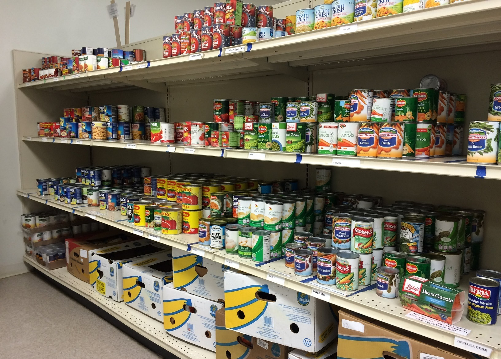
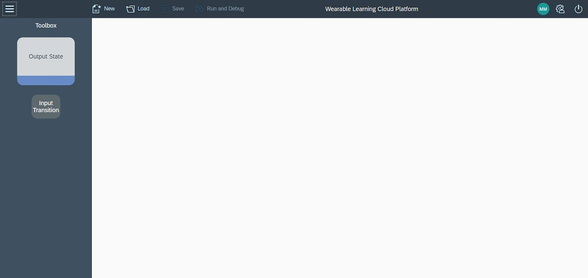
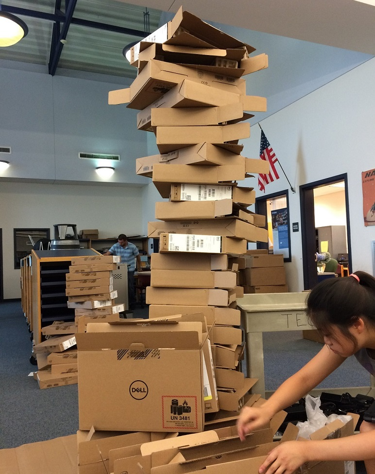

Hello there! My name is Derek Ng, and I am a rising senior at the Massachusetts Academy of Math and Science.
I am from Littleton, Massachusetts, and I have been living in Massachusetts for all my life.
From kindergarten through tenth grade, I went to the Littleton Public Schools.
Compared to other schools, Littleton is pretty small, but it was a very nice place to be.
Coming to Mass Academy was a big change because of the different teaching styles, longer school days, and longer commute,
but in the end, it was definitely a positive change.
Sports
I have been swimming since I was three years old. I have been on many club teams, in addition to being on the high school varsity team.
Unfortunately, Littleton is too small to have their own swim team, so its swimmers swim for the Bromfield Swim Team.
My favorite events are the breaststroke and the long-distance events. Unfortunately, ever since I came to Mass Academy,
I am no longer able to swim because I cannot get to practice on time. In addition to swimming,
I also began doing cross country with my school last year. Before last year, I had never run over a mile before.
However, once I began running more often, running the 5K course became much easier.
Music
I have been playing piano since August 2007, which means that this is my eleventh year playing piano. I really enjoy playing!
For the past eight years, I have done this thing called the Guild Auditions.
It isn’t an audition for anything; instead, what I do is I memorize a whole bunch of pieces, and I play them for a judge who gives me feedback on how I could improve.
I have also been playing the clarinet in the Littleton school band since fourth grade.
Because I can no longer be in the concert band since they practice during school, I have joined the jazz band, which practices in the evenings.
Community Service

Throughout the first half of the year, I have helped out at the Loaves and Fishes Food Pantry in
Devens, MA. The mission of Loaves and Fishes is to provide anyone who lives in Ayer, Devens, Groton, Harvard, Littleton, or Shirley with enough food regardless of
income. I helped them restock their shelves with food every Monday and Wednesday for an hour. To the left is one of the shelves that I was in the process of restocking.

In D term, there was an extracurricular called IMGD
where we could volunteer to participate in a study. The study focused on how creating interactive math games would improve learning. We tested their process of
creating games using their software to program it to see if it was feasible. The participants were split into groups of three or four. My team designed a math tag
game where players would start separated around the room. The players would then answer math problems, and if correct, they would then be able to move two steps and
attempt to tag someone out. If incorrect, that person would have to stay still. The game ends when only one person is left. To the right is an image of the game
designer interface.

I also helped out with a bunch of events back at Littleton. I helped the Humanitarian Club at a bake sale and at the Holiday Bazaar, which is an annual event in
Littleton where organizations can sell goods for the holidays. The library at Littleton High School is also in the process of being upgraded, so I helped them unpack
and put together some new supplies. I also helped out at some home cross country meets, and I helped out at Littleton's scholarship drive. To the left is a picture of
the boxes of Chromebooks that I helped unpack.
Random Facts in No Particular Order
I have a sister in tenth grade.
I have no pets.
My last name, Ng, is pronounced like "-ing."
I have never been out of North America.
Orange and blue are my favorite colors.
I lived in Maynard, MA before moving to Littleton.